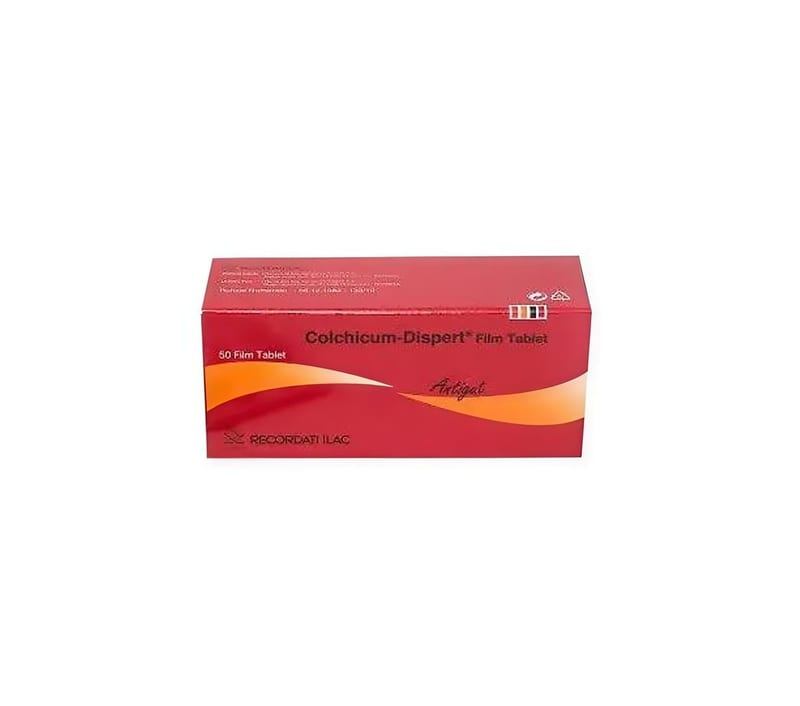

Colchicum Dispert 0,5 mg Film Tablet, 50 Adet

Ne için kullanılır
KT · Bölüm 1COLCHICUM DISPERT, kırmızı renkli, bikonveks, yuvarlak film kaplı tablet şeklinde sunulmaktadır. Kolşisin etkin maddesini içermektedir.
COLCHICUM DISPERT akut ve kronik gut (damla) hastalığı ve ailevi Akdeniz Hummasının (karın ağrısı, eklem ağrısı, şişlik ve ateşle nöbetler halinde seyreden kalıtımsal bir hastalık) profilaksi (hastalığın oluşumunu veya gelişimini önlemek amacıyla yapılan koruyucu tedavi) ve tedavisinde ve keza Behçet Hastalığı (ağızda ve cinsel bölgede ağrılı yaralar, göz problemleri ve deri bulgularıyla seyreden, vücudun kendi hücrelerine karşı antikor oluşturduğu bir hastalık) sendromunun tedavisinde kullanılır. COLCHICUM DISPERT aynı zamanda akut veya reküren (tekrarlayan) perikardit (kalbi çevreleyen zarın iltihaplanması) tedavisinde ve kardiyovasküler hastalıkların sekonder korumasında uygun medikal tedaviye rağmen tekrarlayan kardiyovasküler olaylar yaşayan hastalarda veya diğer risk faktörlerinin yeterince kontrol edilemediği hastalarda kullanılır.
COLCHICUM DISPERT, 50 film kaplı tablet içeren blister ambalajda, hasta kullanma talimatını da içeren karton kutuda kullanıma sunulmuştur.